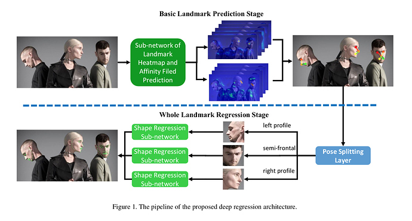
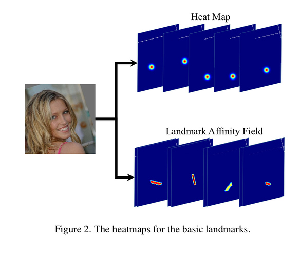
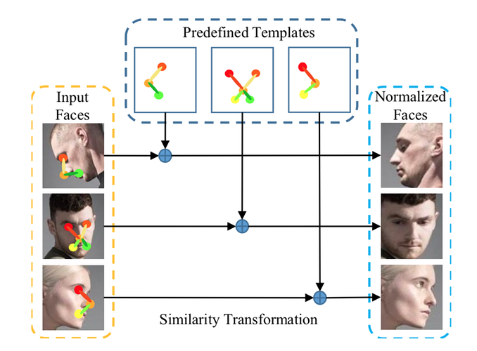
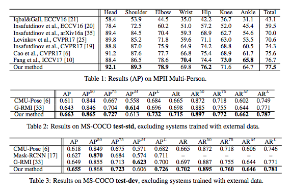

Unconstrained Face Alignment without Face Detection
URL: https://ieeexplore.ieee.org/document/8014992
【Summary】 CVPR2017 Workshop一篇关于人脸关键点检测的论文，应该主要是在参加CVPR2017的一个Menpo Challenge。 整篇论文的主要内容可以理解为把OpenPose中的一些做法应用到人脸关键点定位任务中。
下图是论文中给出的对所提方法整个pipeline的示意，论文所提方法主要可以分成两个部分Basic Landmark Prediction Stage（BLPS）和 Whole Landmark Regression Stage（WLRS）。第一部分负责得到人脸关键点的粗定位（其实只是所有关键点中几个主要的点比如眼球、鼻尖等），第二部分负责在第一阶段的基础上进行进一步的refine：

- Basic Landmark Prediction Stage：这一部分可以直接理解为OpenPose 中PAF在人脸关键点中的应用。具体细节可以直接参考OpenPose那篇文章。只是在本论文中当前阶段只处理人脸关键点中主要的几个点（左右眼球、鼻尖和左右嘴角共5个点）。
 - Whole Landmark Regression Stage：这一部分是直接接在BLPS之后进行的。首先会利用BLPS的结果根据关键点的可见性判断人脸的Pose，总共分成三类：left profile、right profile、semi-frontal。那么论文本身是对这三种pose计算过模版脸的，所以可以直接align 到模版脸上，最后直接送到回归网络回归最后的精确结果。感觉这也是目前人脸关键点任务中比较常用的方法：\

论文用的训练数据来自300W + Menpo + CelebA，作者在300W数据集上做的实验结果：

这篇论文可以理解为OpenPose方法在人脸关键点定位任务上的直接应用，从方法整体的pipeline上看其实和目前我们在做的landmark定位逻辑是一致的，都是先给部分点的位置然后align在精细refine所有的点。
本博客所有文章除特别声明外，均采用 CC BY-NC-SA 4.0 许可协议。转载请注明来自 Out of Memory！